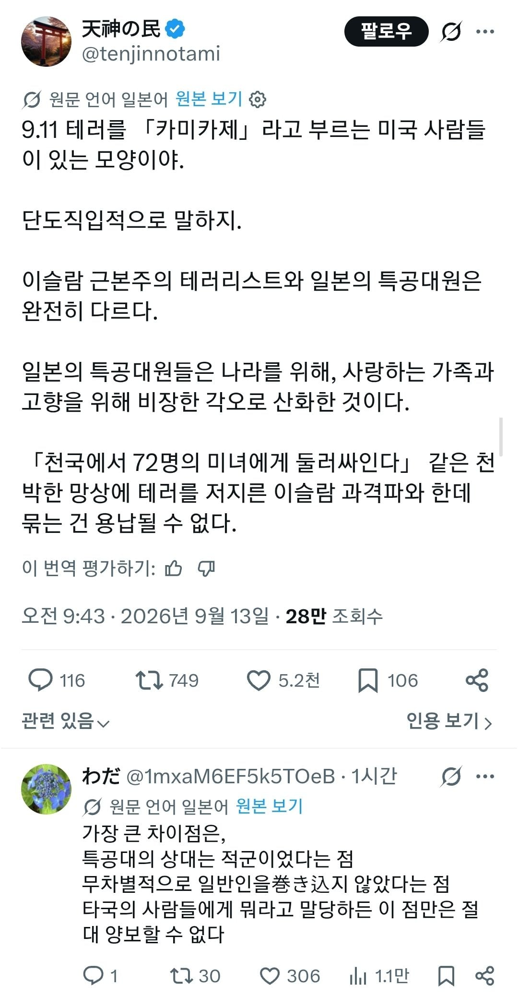

그것만큼은 양보할수 없다!!!!

그것만큼은 양보할수 없다!!!!
느그 영웅들은 민간인 목베는걸로 레이스 하고 그러던데 왜 참배해줌?
알라나 덴노나 ㅉ
지랄 옘병을 하네 아주
똑같은걸 지들만 모름ㅋㅋㅋㅋㅋㅋㅋㅋㅋㅋㅋㅋ
어떻게 보면 더한새끼들 아님? 911이야 본인 선택이자 종교적 신념으로 박았다 치는데, 카미카제는 남의나라 사람들 데려다가 염병하기도 했자나
음.......병신이나 등신이나
좇이나 까잡수셔 전범 후손새끼야 ㅋㅋㅋ
민간인 무차별 테러도 시도도 줜나 했잖아 ㅋㅋㅋ 능력부족으로 성공 못한거지 ㅋㅋ
알라후 아크바르나
덴노헤카 반자이나
ㅋㅋ 알라후 아크바르 외친거랑 엄마!! 부르짖으면서 죽은거랑 다르긴 해~ 꼭 잽들은 똑같은 행동에 의미부여하는 걸 좋아해
못해서 그런거지 ㅋㅋㅋㅋ 본토 타격할 폭탄 풍선 같은것도 만들었는데
ㅋㅋㅋㅋㅋㅋ 고향을 위해 타국 위에서 공격
어떻게든 이를 악물고 특공이나 숭고한 희생이라고 포장하긴 해야함. 안그러면 개죽음이거든ㅋㅋㅋㅋㅋㅋ
중국, 한국, 동남아, 오키나와 민간인들 취급과 탈출한 미국 파일럿 기총으로 죽이는 거 보면 미국 민간인을 못 죽였을 뿐이지 ㅋㅋ
진짜 미화못해서 안달이네 역겨운 자폭테러범새끼들이ㅋㅋㅋ
스커지
무자비 테러인가? O
비행기를 썼는가? O
미국에 박았는가? O
대가를 치렀는가? O

카미카제는 군함상대, 911은 민간인 상대니까 다르긴 해
근데 911은 어쨋거나 자기 병력, 자기소신으로 한건데
카미카제는 식민지 국민도 맘대로 태웠자너
미국에 개기고 개같이 처맞았다는 데서 오나지다로? 한 잔 해
우리는 결이 다르다 데스
카미카제 : 지만 뒤짐 / 911테러 : 무고한 사람 2천명 죽임
역시 일본은 차원이 다르구만 달라
본질은 같지 목표 대상이 달랐을뿐이고
고향을 위해 ㅋㅋㅋㅋㅋ
알라 후 아크바르 = 뎅노헤이카 반자이!
지들만모름 ㅋㅋㅋ
911테러범들은 적어도 자기네 이슬람극단주의자 내의 지원자만 받았지
카미카제는 가기싫은 소년병들, 식민지사람들 억지로 끌고와 태웠잖아? ㅋㅋㅋㅋㅋㅋ
생각해보니 그렇네 ㅋㅋㅋㅋㅋㅋㅋ
엥? 가미카제는 토도 하와와 아님?
그 한국인한테 여친 뺏긴놈 있자너
국가단위로 강제하지도 않았지
일반인에 교환비 안맞게 비행기로 갖다박을까
일반인은 안죽인거처럼 말하네
대충생각나는것만 해도 제암리나 간도 대학살처럼 학살하고 방화해서 다 태워죽여놓고
ㅋㅋㅋㅋ
하기사 카미카제는 제대로된 전공이 없다는게 다르긴하네..
왜 하필 72명의 여자들에게 둘러쌓이는게 천국 ㅋㅋㅋㅋㅋ
궁금한게 반대로 여자 이슬람교도가 자폭테러해서 승천하면 72명의 남자들에게 둘러쌓이는거냐 ㅋㅋㅋㅋ
사실 카미카제 전술은 투입자원대비 효과가 매우 떨어지는 전술임. 양성하는 데 오랜 시간과 많은 비용이 드는 엘리트 병과인 조종사를 단순히 1회용 폭탄으로 말 그대로 '낭비'해 버린 것임. 오죽하면 저 작전에 대해 듣게 된 당시 초등학생이었던 아키히토 황태자 조차 "그럼 그건 조종사를 낭비하는 거 아닌가?"라고 물었다는 이야기도 있음. 나중에는 조종사가 부족해지자 아주 기초적인 교육만 실시한 후 비행기에 태워 보냈기 때문에 그 성공률은 더 떨어졌음. 초기에는 피해를 입었던 연합군도 이후 방공전략을 세워 거의 피해 없이 막을 수 있었음.
무엇보다 카미카제 임무에 투입된 조종사들이 자발적으로 나섰다기보다는 대부분의 경우 강압과 반강제적으로 투입되었고, 국가의 항복을 조금 미루기 위해 인간의 생명을 바치는 인권유린적인 행동이라는 점에서 지탄받아 마땅한 행동임. 실제 2차 대전 말기 나치에서도 감옥에 수감되어 있는 범죄자들을 자폭병으로 쓰는 전략을 고민하다 '너무 비인도적이다' 라며 포기했는데 일본은 이걸 직접 한 것임. 일본 내에선 카미카제를 조국을 위해 자기 한 목숨을 바친 애국적 행동으로 포장하지만 실상은 전체주의와 생명 경시 풍조에서 사람의 목숨을 헌신짝으로도 생각하지 않은 행동이었음.
강도 살인한 범죄자가 강간 살인 한 범죄자한테 우린 강간은 안했다! 하고 앉아있는 느낌 ㅋㅋㅋ